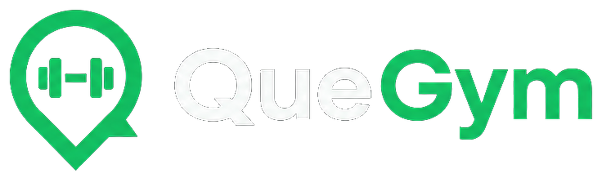
Esta guía es para quien va a verificar que la información sea real y agregar los gimnasios que aún faltan. Está escrita en lenguaje claro, sin necesidad de saber de programación.
QueGym ayuda a la gente a descubrir, comparar y contactar centros de fitness en Caracas. Si un gimnasio sale con datos falsos o incompletos, la persona pierde confianza.
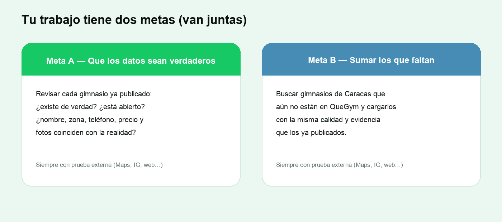
| Tema | Situación |
|---|---|
| Cantidad aproximada | ~95 gimnasios ya cargados |
| Sitio de prueba | https://staging.quegym.com |
| Buscar centros | Entra a /buscar en ese sitio |
| Ejemplo de ficha | Gold’s Gym San Ignacio (búscala por nombre) |
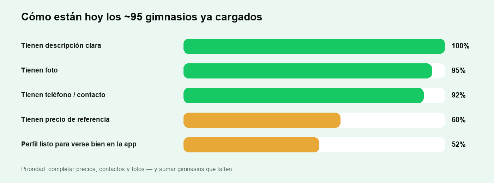
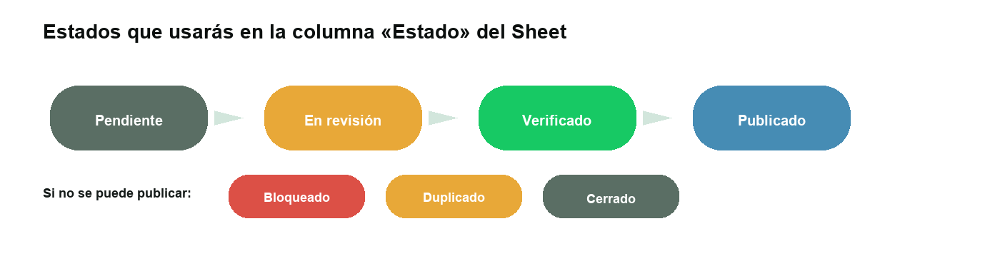
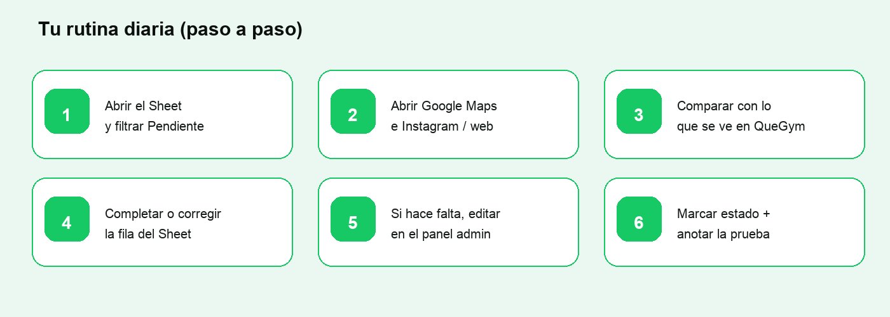
Esta es la pieza central de tu trabajo. Crea una hoja nueva (o usa la que te compartan) con estas columnas. Cada fila = una sede (si un gym tiene dos locales, son dos filas).
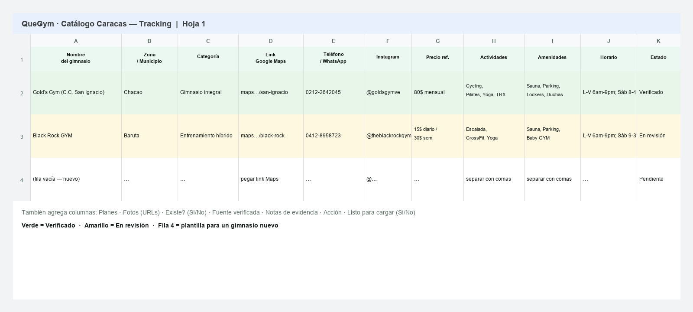
| Columna | Qué poner | Ejemplo |
|---|---|---|
| Nombre del Gimnasio | Nombre comercial de la sede | Gold's Gym (Sede C.C. San Ignacio) |
| Zona / Municipio | Uno de los municipios canónicos | Chacao |
| Categoría | Qué tipo de centro es | Gimnasio Integral / Fitness Center |
| Link de Google Maps | Enlace que abre el lugar en Maps | https://maps.app.goo.gl/… |
| Teléfono / WhatsApp | Número de contacto | 0212-2642045 |
| Usuario con @ | @goldsgymve | |
| Precio (Ref.) | Precio mensual / semanal / diario | 80$ mensual |
| Planes | Planes especiales (si hay) | Estudiantil, familiar… |
| Amenidades | Separadas por | o comas | Sauna | Parking | Duchas |
| Actividades | Separadas por | o comas | Cycling | Pilates | Yoga |
| Horario (Resumen) | Texto corto | Lun-Vie 6am–9pm |
| Fotos (URLs) | Links que abran la imagen en el navegador | https://…/foto.jpg |
| Columna | Valores / uso |
|---|---|
| Estado | Pendiente · En revisión · Verificado · Publicado · Bloqueado · Duplicado · Cerrado |
| Existe confirmado | Sí / No (+ fecha en notas) |
| Fuente verificada | Ej.: Google Maps + Instagram |
| Notas de evidencia | Qué revisaste y qué faltó |
| Acción | corregir · alta_nueva · sin_cambio · excluir |
| Listo para cargar | Sí solo cuando la fila está completa y verificada |
También hay un archivo listo para importar: ejemplo-tabla-gimnasios.csv (en la carpeta de assets del proyecto).
| Nombre | Zona | Categoría | Teléfono | Precio | Estado | Listo | |
|---|---|---|---|---|---|---|---|
| Gold's Gym (Sede C.C. San Ignacio) | Chacao | Gimnasio Integral | 0212-2642045 | @goldsgymve | 80$ mensual | Verificado | Sí |
| Black Rock GYM | Baruta | Entrenamiento híbrido | 0412-8958723 | @theblackrockgym | 15$ diario | En revisión | No |
| Nuevo Gym Ejemplo | Libertador | Musculación | 0414-0000000 | @usuario_ig | consultar | Pendiente | No |
| Campo | Valor de ejemplo |
|---|---|
| Link de Google Maps | Link real del local (abre el pin correcto) |
| Amenidades | Sauna | Estacionamiento | Lockers | Duchas |
| Actividades | Cycling | Pilates | Yoga | TRX |
| Horario | Lun-Vie 6:00 AM – 9:00 PM | Sáb 8:00 AM – 4:00 PM |
| Fotos | 1 o más URLs que abran la imagen (no archivos pegados en el chat) |
| Fuente verificada | Google Maps + Instagram @goldsgymve |
| Notas de evidencia | Revisado 2026-07-30: abierto; teléfono responde; fotos OK |
| Acción | sin_cambio |
Piensa en cada gimnasio como una tarjeta de información. Lo que escribes en Sheets es lo que luego se ve (o ayuda a que se vea bien) en QueGym.
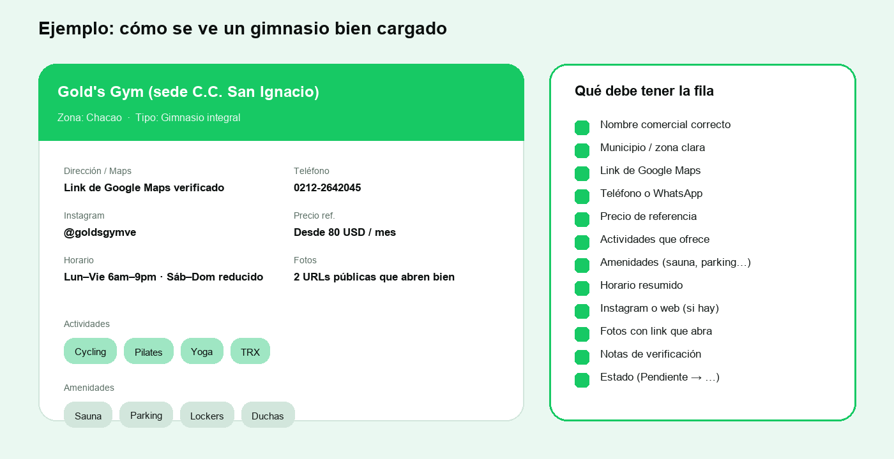
| Si el negocio es… | Pon en Categoría algo como… |
|---|---|
| Gimnasio de pesas / integral / fitness | Gimnasio Integral / Fitness Center |
| CrossFit / funcional / box | Entrenamiento funcional / híbrido |
| Estudio de yoga | Yoga |
| Estudio de pilates | Pilates |
| Spinning / cycling | Cycling / Spinning |
| Entrenador personal / estudio chico | Entrenamiento personal |
| Mezcla (varios deportes) | Centro mixto / club |
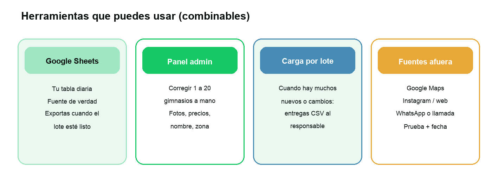
Ideal para corregir 1 a 20 gimnasios: nombre, fotos, precios, textos.
| Dónde entrar | Para qué |
|---|---|
| staging.quegym.com/admin/login | Iniciar sesión |
| …/admin/catalogo | Ver la lista de centros |
| Botón editar de un centro | Cambiar perfil, fotos, planes |
| …/admin/duplicados | Ver posibles repetidos |
| …/buscar | Verlo como lo ve un usuario |
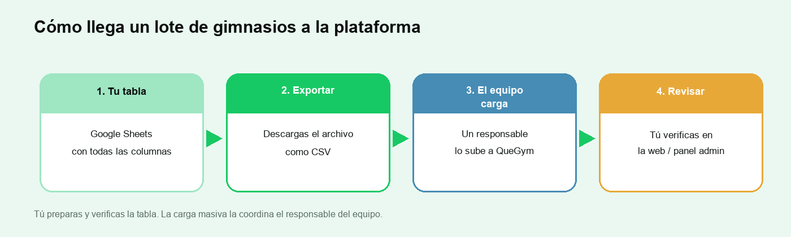
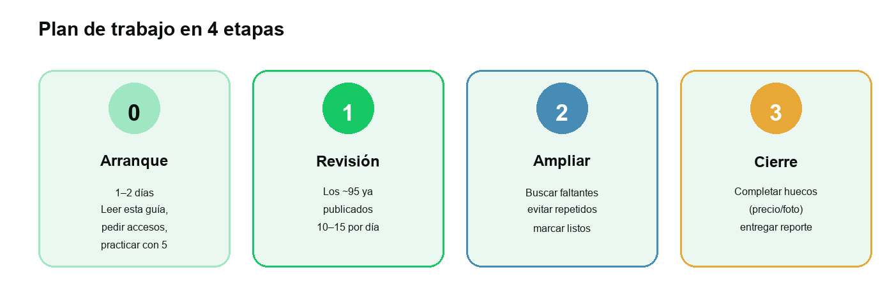
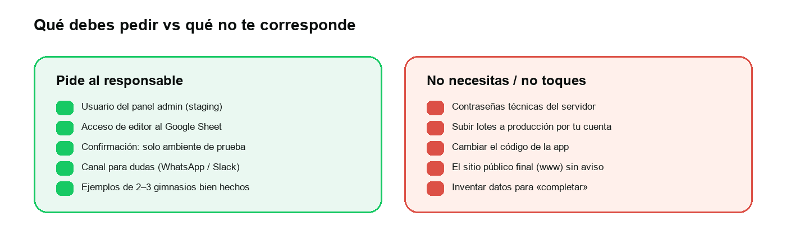
| Para | Dirección |
|---|---|
| Inicio del sitio de prueba | https://staging.quegym.com |
| Buscar gimnasios | https://staging.quegym.com/buscar |
| Entrar al panel | https://staging.quegym.com/admin/login |
| Lista de centros (admin) | https://staging.quegym.com/admin/catalogo |
| Posibles duplicados | https://staging.quegym.com/admin/duplicados |
| Si pasa esto… | Habla con… |
|---|---|
| No tienes acceso al admin o al Sheet | Ops / responsable |
| Hay que cargar un lote grande | Responsable técnico / de datos |
| Dudas si es el mismo gimnasio repetido | Lead de datos |
| Local cerrado o dato sensible | Ops |
| Actividad o amenidad que no sabes cómo anotar | Lead de datos |